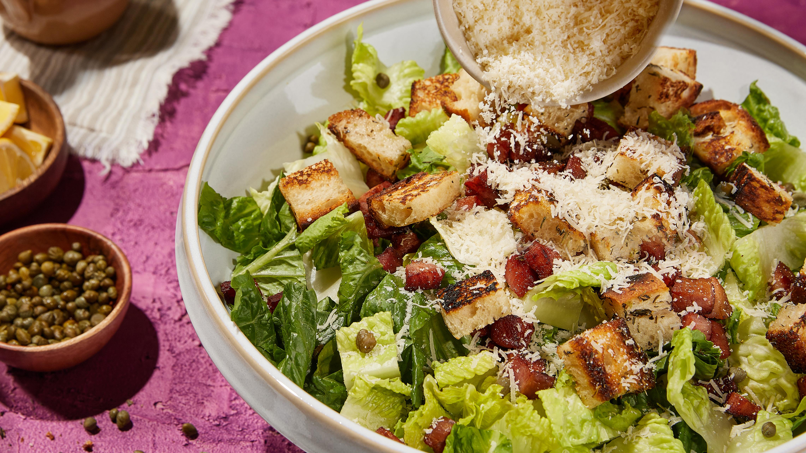

Salade César

Type de cuisine : Cuisine du monde
Tranche de prix : Moins de 5$
Équilibre nutritionnel : Très équilibré
Description du plat : La Salade César est un classique des salades, connue pour sa sauce crémeuse et ses croûtons croustillants.
Temps de préparation : 15 min
Temps de cuisson : 5 min
Pour : 4 personnes
Ingrédients
- 2 cuillères à soupe d'huile
- 2 cœurs de laitue effeuillé
- 25 g de Parmesan (copeaux)
- 4 tranches de pain écroustées
Pour la sauce :
- Sel
- Poivre
- 15 cl d'huile
- 1 trait de tabasco
- 0.5 cuillère à café de moutarde
- 1 œuf
- 25 g de parmesan râpé
- 2 cuillères à café de câpres
- Citron
- 1 gousse d'ail pelée
Ustensiles
- 1 pinceau
- 1 saladier
- 1 mixeur
- 1 bol
Étapes de préparation
- Faites dorer le pain, coupé en cubes, 3 min dans un peu d'huile.
- Déchirez les feuilles de romaine dans un saladier, et ajoutez les croûtons préalablement épongés dans du papier absorbant.
- Préparez la sauce : Faites cuire l'œuf 1 min 30 dans l'eau bouillante, et rafraîchissez-le.
- Cassez-le dans le bol d'un mixeur et mixez, avec tous les autres ingrédients; rectifiez l'assaisonnement et incorporez à la salade.
- Décorez de copeaux de parmesan, et servez.